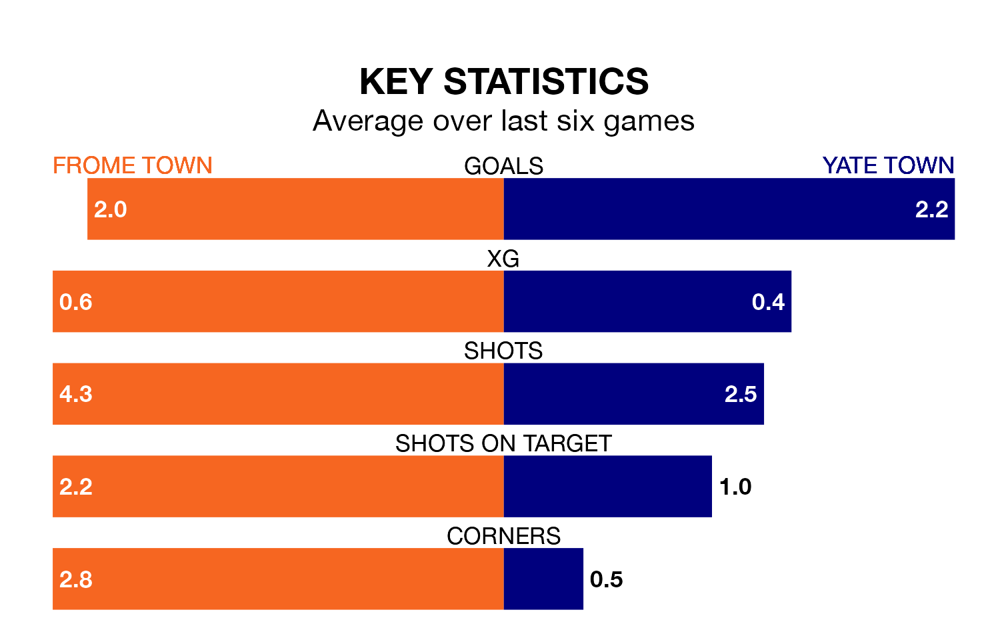

Frome Town face Yate Town on Saturday seeking to protect their long unbeaten run in the Southern League Division One South.
Frome are unbeaten in five, with three wins and two draws, ahead of the 3pm kick-off.
They face a Yate team who have won two and drawn two over the same number of games.
With 56 goals in 27 games so far this season, Frome are the league's joint-second-highest scorers with 2.1 goals per game. And they are conceding fewer than average, letting in 34 goals at a rate of 1.3 per game.
Yate, meanwhile, are below average scorers, with 1.5 goals per game, compared to a league average of 1.6. They have conceded 1.3 goals per game.
Frome Town are second in the table after 27 games, of which they have won 16 and drawn six, earning 54 points.
Yate Town are five places behind the home team in seventh, with 10 wins and eight draws putting them on 38 points.
Frome's last match was on March 9, a 0-0 draw against Bideford.
Yate beat Bideford 1-0 last time out, on February 24.
Updated: 15:10 (UTC), 15/03/24